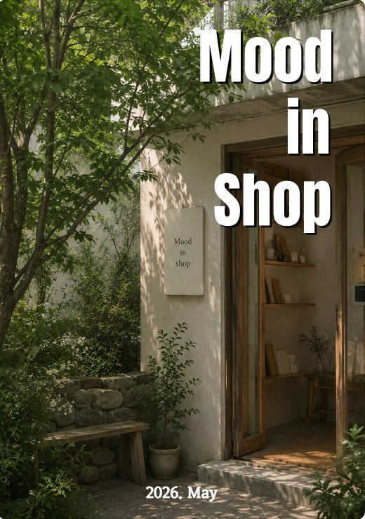

Mood in Shop · Daily Category
DAILY
MOOD.
루틴이 무드를 만들고, 무드가 하루를 만든다.
루틴이 무드를 만들고, 무드가 하루를 만든다.
일기를 쓰지 않아도 괜찮습니다. 오늘 찍은 스탬프 하나, 오늘 고른 향 하나. 그 작은 선택들이 모여 나만의 무드가 됩니다.
Daily Mood는 매일의 일상을 더 감각적으로 채우는 것들을 모았습니다. 도장, 다이어리, 루틴 키트.

오늘의 기록을 도장으로. 나만의 무드를 새기는 방법.
오늘의 무드를 기록하는 나만의 공간.
매일 아침, 나만의 무드 루틴을 시작하기 위한 키트.